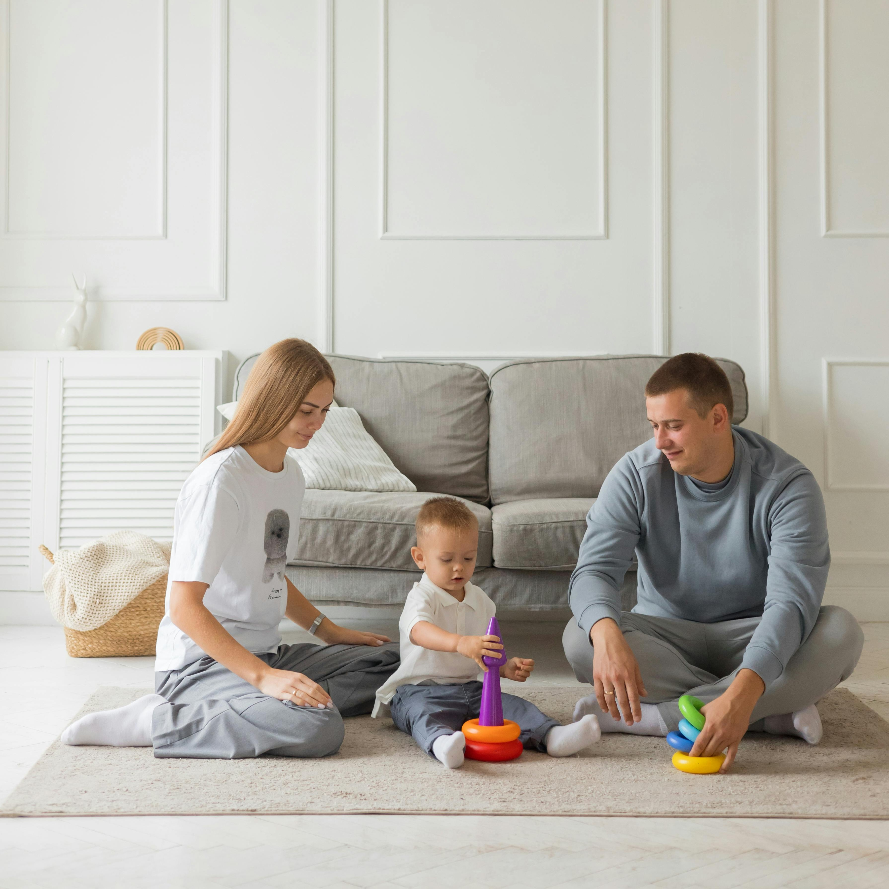
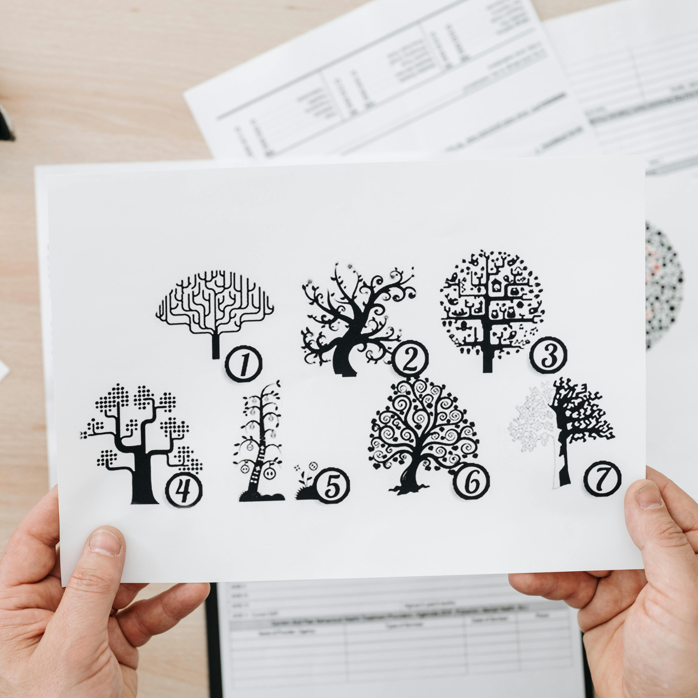

Nuestros Servicios Especializados

Terapia Individual
Ayudamos a los niños a procesar emociones, manejar la ansiedad, desarrollar habilidades sociales y fortalecer su autoestima en un ambiente lúdico y seguro.

Orientación a Padres
Ofrecemos herramientas y estrategias efectivas para comprender y apoyar el desarrollo emocional y conductual de sus hijos en casa.

Evaluación Diagnóstica
Realizamos evaluaciones completas para identificar necesidades específicas de desarrollo, aprendizaje o comportamiento y trazar planes de apoyo.